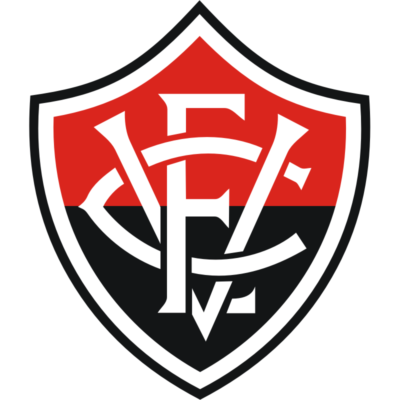

-
Atlético-Goianiense

- 1937
Meu Atlético, Meu estandarte Modéstia à parte tem a força Quente de um dragão Meu Atlético tem a mania de dar Alegria pro meu coração... Meu rubro negro, eu chego e vejo, Você cumprindo o meu desejo de vencer, vencer, vencer! Dá gosto ver nosso dragão, Rolando a bola pelo chão e Dando um show e mais um gol... Lê Lêlêoo Lê Lêlêoo Atlético!
-
Athletico Paranaense

- 1924
Atlético, Atlético! Conhecemos o teu valor E a camisa rubro-negra Só se veste por amor! Vamos marchar sempre entoando Esta gloriosa canção E no peito ostentando Nosso amado pavilhão O Coração do Atleticano Deve estar sempre voltado Para as glórias do presente E os feitos do passado A tradição da nossa raça Nos legou um sangue forte, Rubro-negro não tem jaça E não teme a própria morte. A flâmula vermelha e preta Representa um esplendor Todos cá desta Baixada A defendem com amor. É por isso e mais por isso Que ecoa de Sul a Norte Todos os homens rubro-negros Descendem de raça forte.
-
Atlético-MG
- 1908
Nós somos do clube Atlético Mineiro Jogamos com muita raça e amor Vibramos com alegria nas vitórias Clube Atlético Mineiro Galo forte e vingador Vencer, vencer, vencer Este é o nosso ideal Honramos o nome de Minas No cenário esportivo mundial Lutar, lutar, lutar Pelos gramados do mundo pra vencer Clube Atlético Mineiro Uma vez até morrer Nós somos campeões do gelo O nosso time é imortal Nós somos campeões dos campeões Somos orgulho do esporte nacional Lutar, lutar, lutar Com toda a nossa raça pra vencer Clube Atlético Mineiro Uma vez até morrer Clube Atlético Mineiro Uma vez até morrer Nós somos campeões do gelo O nosso time é imortal Nós somos campeões dos campeões Somos orgulho do esporte nacional Lutar, lutar, lutar Com toda a nossa raça pra vencer Clube Atlético Mineiro Uma vez até morrer Clube Atlético Mineiro Uma vez até morrer
-
Bahia
- 1931
Somos da turma tricolor Somos a voz do campeão Somos do povo um clamor Ninguém nos vence em vibração Vamos avante esquadrão Vamos serás um vencedor Vamos conquistar mais um tento BAHIA, BAHIA, BAHIA! Ouve esta voz que é teu alento BAHIA, BAHIA, BAHIA! Mais um, mais um Bahia Mais um mais um título de glória Mais um, mais um Bahia É assim que se resume a sua história.
-
Botafogo
- 1894
Botafogo, Botafogo, campeão desde 1907 Foste herói em cada jogo, Botafogo Por isso é que tu és e hás de ser Nosso imenso prazer Tradições aos milhões tens também Tu és o Glorioso, Não podes perder, perder pra ninguém. Noutros esportes tua fibra está presente Honrando as cores do Brasil de nossa gente Na estrada dos louros, um facho de luz Tua Estrela Solitária te conduz
-
Corinthians
- 1910
Salve o Corinthians, O campeão dos campeões Eternamente Dentro dos nosso corações Salve o Corinthians De tradições e glórias mil Tu és orgulho Dos desportistas do Brasil Teu passado é uma bandeira Teu presente é uma lição Figuras entre os primeiros do nosso esporte bretão Corinthians Grande Sempre Altaneiro És do Brasil O clube mais brasileiro Salve o Corinthians O campeão dos campeões Eternamente Dentro dos nosso corações Salve o Corinthians De tradições e glórias mil Tu és orgulho Dos desportistas do Brasil
-
Criciúma
- 1947
Lembrando os heróis do passado Que escreveram seus nomes na história Oh! Tricolor predestinado A um presente e futuro de glórias Salve o Criciúma No esporte Nacional Salve o Criciúma De patrimônio imortal Na hora da decisão Numa só voz grita feliz O meu povão Criciúma, Criciúma Nosso Clube de amor Alma, garra e coração. Vibrando estaremos contigo Desfraldando o teu pavilhão Onde estiver o mais querido Dos campeões - o nosso campeão
-
Cruzeiro
- 1921
Existe um grande clube na cidade, que mora dentro do meu coração Eu vivo cheio de vaidade pois na realidade é um grande campeão Nos gramados de Minas Gerais temos páginas heróicas e imortais Cruzeiro Cruzeiro querido tão combatido jamais vencido. Existe um grande clube na cidade, que mora dentro do meu coração Eu vivo cheio de vaidade pois na realidade é um grande campeão Nos gramados de Minas Gerais temos páginas heróicas e imortais Cruzeiro Cruzeiro querido tão combatido jamais vencido.
-
Cuiabá

- 2001
Cuiabá Esporte Clube Time do meu coração Nasceste predestinado Para ser um grande campeão! Legítimo representante da cidade verde Da terra do sol És guerreiro, és gigante Na arte do futebol! Auriverde da baixada Suas cores lembram nossa tradição Em cada gol, cada jogada Reacende a chama da nossa paixão! Cuiabá, Cuiabá, Cuiabá Tens a valentia de um dourado Em campo nos faz vibrar No gingado do rasqueado
-
Flamengo
- 1895
Uma vez Flamengo, sempre Flamengo Flamengo sempre eu hei de ser É o meu maior prazer vê-lo brilhar Seja na terra, seja no mar Vencer, vencer, vencer Uma vez Flamengo, Flamengo até morrer Na regata ele me mata, me maltrata Me arrebata, que emoção no coração Consagrado no gramado, sempre amado Mais cotado no Fla-Flu, é o ai Jesus Eu teria um desgosto profundo Se faltasse o Flamengo no mundo Ele vibra, ele é fibra, muita libra, já pesou Flamengo até morrer, eu sou Uma vez Flamengo, sempre Flamengo Flamengo sempre eu hei de ser É o meu maior prazer vê-lo brilhar Seja na terra, seja no mar Vencer, vencer, vencer Uma vez Flamengo, Flamengo até morrer Na regata ele me mata, me maltrata Me arrebata, que emoção no coração Consagrado no gramado, sempre amado Mais cotado no Fla-Flu, é o ai Jesus Eu teria um desgosto profundo Se faltasse o Flamengo no mundo Ele vibra, ele é fibra, muita libra, já pesou Flamengo até morrer, eu sou
-
Fluminense
- 1902
Sou tricolor de coração Sou do clube tantas vezes campeão Fascina pela sua disciplina O Fluminense me domina Eu tenho amor ao tricolor Salve o querido pavilhão Das três cores que traduzem tradição A paz, a esperança e o vigor Unido e forte pelo esporte Eu sou é tricolor Vence o Fluminense Com o verde da esperança pois Quem espera sempre alcança Clube que orgulha o Brasil Retumbante de glórias E vitórias mil Sou tricolor de coração Sou do clube tantas vezes campeão Fascina pela sua disciplina O Fluminense me domina Eu tenho amor ao tricolor Salve o querido pavilhão Das três cores que traduzem tradição A paz, a esperança e o vigor Unido e forte pelo esporte Eu sou é tricolor Vence o Fluminense Com sangue de encarnado Com amor e com vigor Faz a torcida querida Vibrar com a emoção Do tricampeão Vence o Fluminense Usando a fidalguia Branco é paz e harmonia Brilha no sol da manhã Ou na luz do refletor Salve o Tricolor
-
Fortaleza
- 1918
Fortaleza, Clube de glória e tradição. Fortaleza, Quantas vezes campeão. Fortaleza, Querido idolatrado, estás sempre guardado, dentro do meu coração. Altivo, tua vida sempre foi um marco, tua glória é lutar e vencer também, salve o Tricolor de Aço. No campo, provaste mesmo que não tens rival, tua turma é valente, é sensacional, salve o Tricolor de Aço. Soberbo, tua fibra representa um norte, combativo, aguerrido, vibrante e forte. Sem demonstrar cansaço, Receba um sincero, abraço da torcida tão leal, meu Tricolor de Aço!
-
Grêmio
- 1903
Até a pé nós iremos Para o que der e vier Mas o certo é que nós estaremos Com o Grêmio onde o Grêmio estiver Até a pé nós iremos Para o que der e vier Mas o certo é que nós estaremos Com o Grêmio onde o Grêmio estiver 50 anos de glória Tens imortal tricolor Os feitos da tua história Canta o Rio Grande com amor Até a pé nós iremos Para o que der e vier Mas o certo é que nós estaremos Com o Grêmio onde o Grêmio estiver Até a pé nós iremos Para o que der e vier Mas o certo e que nós estaremos Com o Grêmio onde o Grêmio estiver Nós somos bons torcedores Sem hesitarmos sequer Aplaudiremos o Grêmio Aonde o Grêmio estiver Até a pé nós iremos Para o que der e vier Mas o certo é que nós estaremos Com o Grêmio onde o Grêmio estiver Até a pé nós iremos Para o que der e vier Mas o certo é que nós estaremos Com o Grêmio onde o Grêmio estiver Até a pé nós iremos Para o que der e vier Mas o certo é que nós estaremos Com o Grêmio onde o Grêmio estiver
-
Internacional
- 1909
Glória do desporto nacional Oh, Internacional Que eu vivo a exaltar Levas a plagas distantes Feitos relevantes Vives a brilhar Correm os anos, surge o amanhã Radioso de luz, varonil Segue a tua senda de vitórias Colorado das glórias Orgulho do Brasil É teu passado alvi-rubro Motivo de festas em nossos corações O teu presente diz tudo Trazendo à torcida alegres emoções Colorado de ases celeiro Teus astros cintilam num céu sempre azul Vibra o Brasil inteiro Com o clube do povo do Rio Grande do Sul
-
Juventude

- 1913
Nossas almas em festa saúdam Esse clube de real tradição Na mais sã alegria se escudam Entoando esta marcha canção Juventude, um passado de glórias Teu nome querido tornou És um clube de muitas vitórias Que a cidade em orgulho deixou
-
Palmeiras
- 1914
Quando surge o Alviverde imponente No gramado em que a luta o aguarda Sabe bem o que vem pela frente Que a dureza do prélio não tarda E o Palmeiras no ardor da partida Transformando a lealdade em padrão Sabe sempre levar de vencida E mostrar que de fato é campeão Defesa que ninguém passa Linha atacante de raça Torcida que canta e vibra (2x) Por nosso Alviverde inteiro Que sabe ser brasileiro Ostentando a sua fibra
-
Red Bull Bragantino
- 1928
Braga é campeão É o alvinegro em ação Bragança toda se inflama Massa Bruta, campeão Na força de uma raça Na luta já vencida Ergamos sempre uma taça Avante, fiel torcida Bragantino, o melhor Primeiro em emoção No campo é o maior Arrebenta coração Defesa bem guardada A arte dentro do campo Velocidade no ataque E a bola entrando no canto Olê, olê, olê, olá A Massa Bruta só joga pra ganhar Vamos lá, rapaz Vamos lá, menino Venham, vamos todos Futebol é Bragantino.
-
São Paulo

- 1930
Salve o tricolor paulista Amado clube brasileiro Tu és forte, tu és grande Dentre os grandes és o primeiro Tu és forte, tu és grande Dentre os grandes és o primeiro Ó tricolor Clube bem amado As tuas glórias Vêm do passado (x2) São teus guias brasileiros Que te amam ternamente De São Paulo tens o nome Que ostentas dignamente Coro: Oh tricolor... São Paulo clube querido Tu tens o nosso amor Teu nome e tuas glórias Têm honra e resplendor Coro: Oh tricolor... Tuas cores gloriosas Despertam amor febril Pela terra Bandeirante: Honra e Glória do Brasil
-
Vasco
- 1898
Vamos todos cantar de coração A Cruz de Malta é o meu pendão Tu tens o nome do heróico português Vasco da Gama, a tua fama assim se fez Tua imensa torcida é bem feliz Norte e sul, norte e sul deste Brasil Tua estrela, na terra a brilhar Ilumina o mar (2x) No atletismo és um braço No remo és imortal No futebol és o traço De união Brasil-Portugal Vamos todos cantar de coração A Cruz de Malta é o meu pendão Tu tens o nome do heróico português Vasco da Gama, a tua fama assim se fez Tua imensa torcida é bem feliz Norte e sul, norte e sul deste Brasil Tua estrela, na terra a brilhar Ilumina o mar (2x) No atletismo és um braço No remo és imortal No futebol és o traço De união Brasil-Portugal
-
Vitória
- 1899
Eu sou Leão da Barra Tradição Eu sou vermelho e preto Eu sou paixão Pelos campos do Brasil Nosso grito já se ouviu ÔoÔoooÔ... Eu sou um nome na história Eu sou Vitória com emoção Eu sou um grito de glória Eu sou Vitória de coração Vitória!! Vitória!!